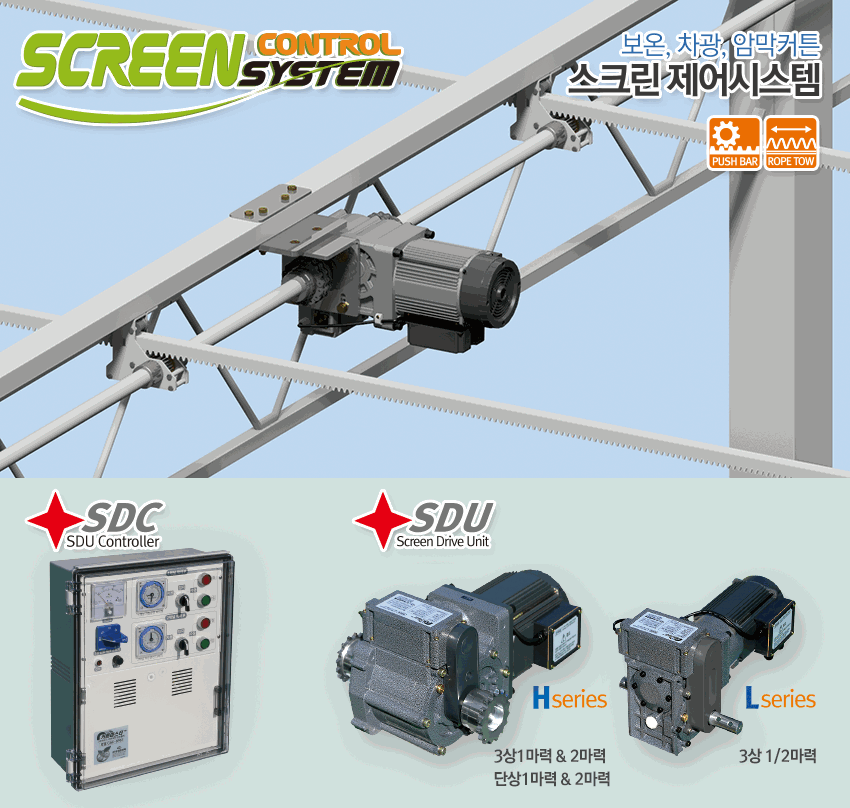

SCREEN CONTROL SYSTEM
시설 규모와 부하에 맞는 SDU를 선택하세요.
SDU는 보온·차광·암막커튼을 체인 또는 리지드 커플링 방식으로 구동하는 AC 스크린 드라이브 유닛입니다.
내장 리미트체인·리지드 커플링전자 브레이크 선택단상·삼상 구성

필요한 구동력과 전원에 맞춰 선택하세요.
카드를 누르면 모델 사양과 구조·설치 자료를 한 화면에서 확인할 수 있습니다.
SDU는 보온·차광·암막커튼을 체인 또는 리지드 커플링 방식으로 구동하는 AC 스크린 드라이브 유닛입니다.

카드를 누르면 모델 사양과 구조·설치 자료를 한 화면에서 확인할 수 있습니다.